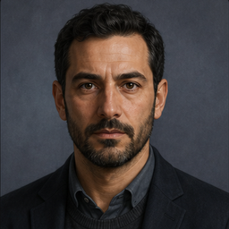

One investigation space for personal assistance, specialist participation, memory, monitoring, and visual analysis.
1. Start and organize investigations
The welcome experience is the entry point for ongoing work, collaboration, and immediate exploration.
Investigations
Open an existing investigation and continue from its accumulated context.
See participants and invite or add collaborators.
Discover related investigations and request to participate.
Start immediately
Begin from the welcome-page conversation input.
A new exploration starts in a draft investigation, ready to accumulate memory and results.
Health and orientation
See whether the intelligence dataset and agent services are available.
Move directly into the investigation workspace.
A short walkthrough of starting an exploration, reviewing investigations and participants, collaboration actions, related investigations, and opening the KFOR workspace.
2. Explore with the personal investigation assistant
The general agent acts as the user's personal assistant across the complete investigation. It supports broad exploration without replacing specialist roles.
Conversational analysis
Ask broad intelligence questions and receive structured analytical answers.
Include complete data layers or filtered subsets as context when asking a question.
Generate relevant result layers and identify connections, gaps, contradictions, and next steps.
Persistent context
Continue the same investigation without starting over.
Use accumulated investigation memory to inform later analysis.
Real-data walkthrough: filter 3,646 UAV observations to 17 high-confidence KFOR MSU armored-vehicle records, attach the layer to the conversation, and turn the assistant's assessment into an explorable map layer.
3. Work with human and AI participants
Every participant can be either a specialized AI agent or a real user. Both participate in the same investigation team and collaboration flow.

Personal assistant
Supports the user across the whole investigation.
Works with broad investigation memory and questions.
Coordinates exploration without taking a specialist's professional role.
Specialist participants
Each participant has a visible identity, role, expertise, and responsibility.
AI participants contribute role-specific analytical skills.
Human participants contribute professional knowledge, judgment, and decisions.
Questions, tasks, and workstreams can be assigned to the most appropriate participant.
Key distinctionThe personal assistant supports the user's overall investigation. Participants - whether AI agents or real people - contribute focused expertise and take responsibility for specific work.
Working specialist example: Moshe processes 84 attached KFOR-family UAV observations from the Ibar Bridge area, exposes his investigation step, provides role-specific monitoring recommendations, and returns an explorable map result.
4. Preserve memory and receive relevant updates
Investigation memory turns one-off analysis into continuous work and enables relevant proactive updates.
Investigation memory
Preserve conversation summaries, findings, layers, filters, and relevant records.
Reopen saved findings and layers in later sessions.
Keep memory separate for each investigation.
New intelligence
Compare newly available information with saved investigation memory.
Report relevant developments, confirmations, contradictions, gaps, and possible next steps in chat.
Remain silent when no saved context exists.
Real workflow: save an analytical finding and its filtered 17-record layer, advance the demo timeline, and receive an independent investigation update grounded in that saved context.
In the demo, advancing the timeline simulates new data arriving. In a live environment, data arrival would trigger the same capability automatically.
5. Use workstreams for focused monitoring
Workstreams turn questions, hypotheses, indications, or targets into focused responsibilities that can be monitored over time.
Workstreams
Assign focused work to AI participants, human participants, or both.
Track activity, status, artifacts, and attention requests.
Open workstream results as analytical layers in the investigation workspace.
Moshe - specialized AI participant
Applies dedicated expertise to indications and target-related analysis.
Reassesses target-oriented workstreams when relevant new intelligence arrives.
Operates independently from the personal assistant's broader updates.
Can work alongside a human targets officer who reviews and adds judgment.
Real workflow: filter the Ibar Bridge UAV layer, create a focused Moshe workstream, advance the demo timeline, and see the specialist reassessment begin in the background.